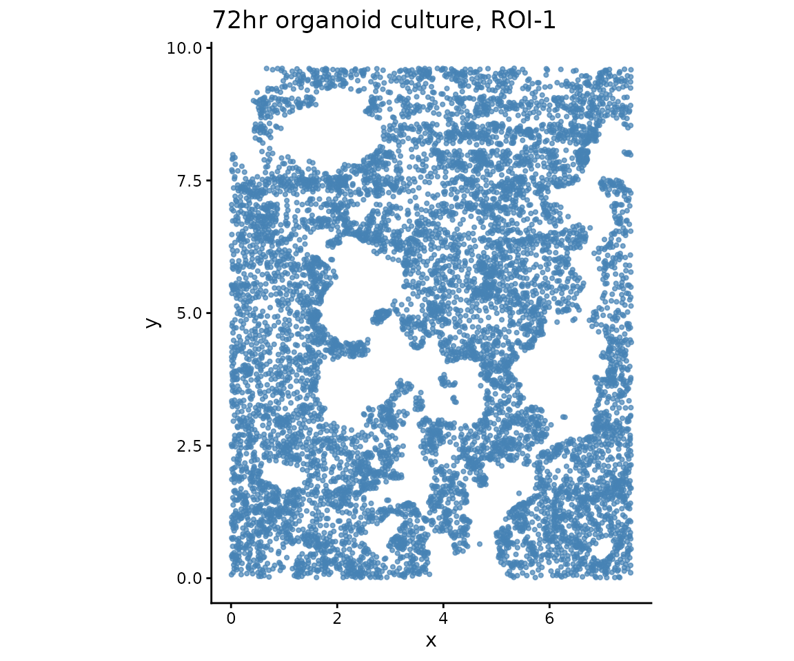
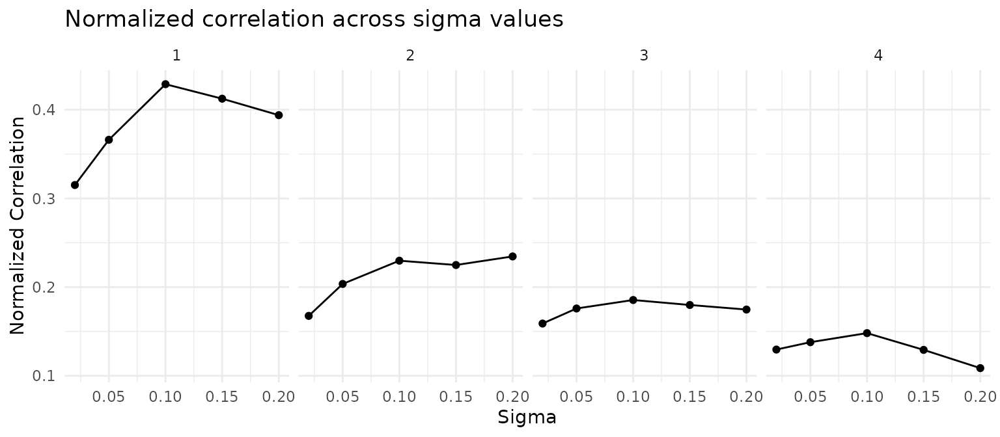
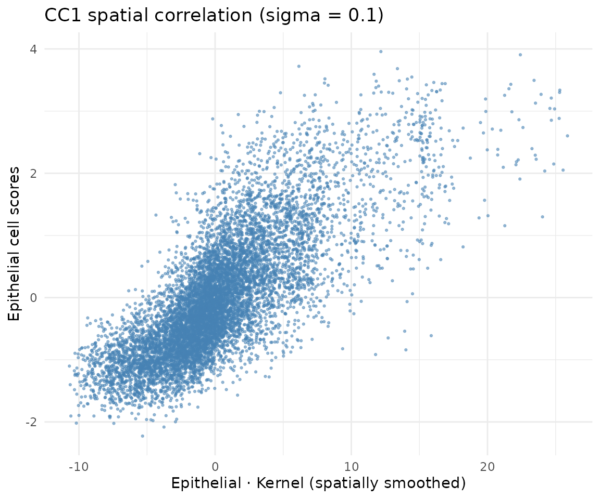
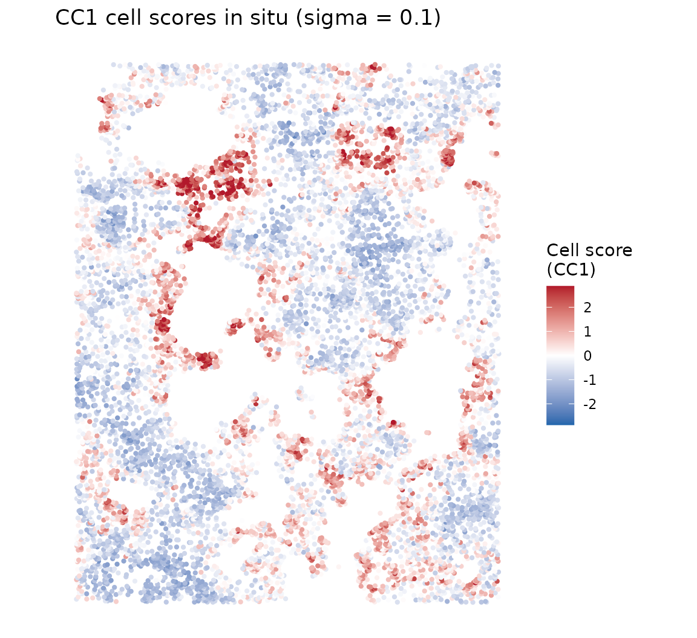
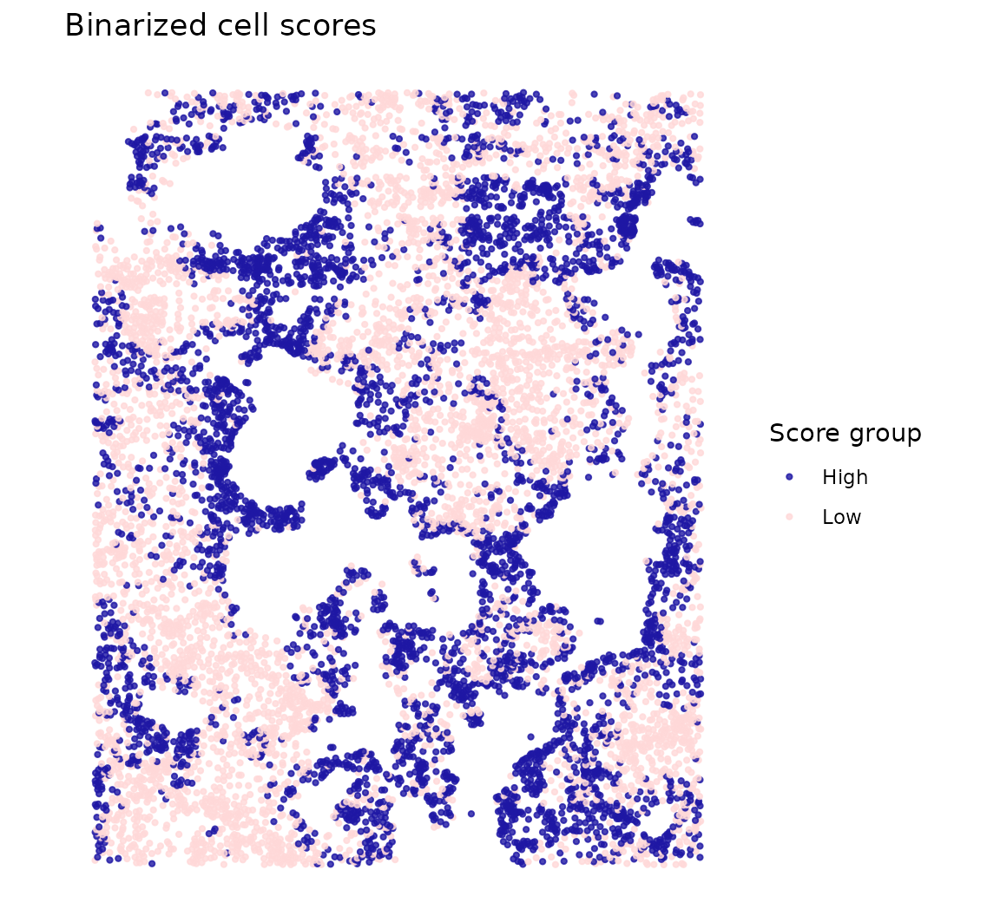
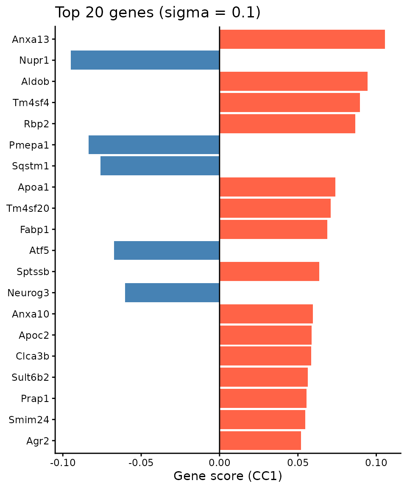

Within-cell-type spatial patterns (Organoid)
2026-04-15
Source:vignettes/organoid_one_type.Rmd
organoid_one_type.RmdOverview
This vignette demonstrates how CoPro detects within-cell-type spatial patterns using a single cell type. We analyze a 72-hour intestinal organoid culture imaged by seqFISH, where all cells are epithelial. CoPro identifies spatially organized gene programs—self-organization patterns that emerge within a single population.
What CoPro finds here: The spatial co-progression of epithelial cells captures the crypt–villus axis of the organoid—cells along the same developmental trajectory cluster spatially.
Download and load data
data_path <- copro_download_data("organoid")## Downloading copro_organoid.rds from GitHub Release 'data-v1'...## Downloaded to: /home/runner/.cache/R/CoPro/copro_organoid.rds## Cells: 9140## Genes: 140The dataset contains:
-
normalizedData: expression matrix (cells x genes), capped at 95th percentile, DESeq2 size-factor normalized, log1p-transformed -
locationData: spatial coordinates (pixels / 5000) -
metaData: cell attributes -
cellTypes: all cells labeled as “Epithelial”
Visualize tissue layout
plot_df <- data.frame(
x = dat$locationData$x,
y = dat$locationData$y
)
ggplot(plot_df, aes(x = x, y = y)) +
geom_point(color = "steelblue", size = 0.8, alpha = 0.7) +
coord_fixed() +
ggtitle("72hr organoid culture, ROI-1") +
xlab("x") + ylab("y") +
theme_classic()
Create CoPro object
obj <- newCoProSingle(
normalizedData = dat$normalizedData,
locationData = dat$locationData,
metaData = dat$metaData,
cellTypes = dat$cellTypes
)
obj <- subsetData(obj, cellTypesOfInterest = "Epithelial")Run the CoPro pipeline
# PCA
obj <- computePCA(obj, nPCA = 30, center = TRUE, scale. = TRUE)## Input is dense (matrixarray), performing irlba pca...
# Spatial distance (no normalization for this dataset)
obj <- computeDistance(obj, distType = "Euclidean2D",
normalizeDistance = FALSE)## 0% 25% 50% 75% 100%
## 0.0412587 2.8279594 4.4908040 6.1964445 12.1367594
# Test multiple sigma values
sigma_choice <- c(0.01, 0.02, 0.05, 0.1, 0.15, 0.2)
obj <- computeKernelMatrix(obj, sigmaValues = sigma_choice,
upperQuantile = 0.85,
normalizeKernel = FALSE,
lowerLimit = 5e-7)## Computing kernel matrix for one cell type
## current sigma value is 0.01## Warning in .CheckSigmaValuesToRemove(kernel_current = kernel_current,
## lowerLimit = lowerLimit, : Kernel matrix for cell types Epithelial and
## Epithelial with sigma = 0.01 contains too many zeros. Specifically, less than
## 0.0218818380743982 % total counts are above the threshold## Warning in .CheckSigmaValuesToRemove(kernel_current = kernel_current,
## lowerLimit = lowerLimit, : Dropping sigma value of 0.01 because all Gaussian
## kernel values are too small, which will not produce meaningful results.## current sigma value is 0.02
## current sigma value is 0.05
## current sigma value is 0.1
## current sigma value is 0.15
## current sigma value is 0.2
## removing 1 sigma values
# Sparse kernel CCA
obj <- runSkrCCA(obj, scalePCs = TRUE, maxIter = 500, nCC = 4)## Running skrCCA for sigma = 0.02## [1] "Convergence reached at 18 iterations (Max diff = 6.102e-06 )"
## [1] "Convergence reached at 0 iterations (Max diff = 4.163e-16 )"
## [1] "Convergence reached at 0 iterations (Max diff = 2.220e-16 )"
## [1] "Convergence reached at 0 iterations (Max diff = 4.441e-16 )"## Running skrCCA for sigma = 0.05## [1] "Convergence reached at 19 iterations (Max diff = 9.844e-06 )"
## [1] "Convergence reached at 0 iterations (Max diff = 2.498e-16 )"
## [1] "Convergence reached at 0 iterations (Max diff = 2.776e-16 )"
## [1] "Convergence reached at 0 iterations (Max diff = 4.441e-16 )"## Running skrCCA for sigma = 0.1## [1] "Convergence reached at 20 iterations (Max diff = 8.907e-06 )"
## [1] "Convergence reached at 0 iterations (Max diff = 3.747e-16 )"
## [1] "Convergence reached at 0 iterations (Max diff = 4.580e-16 )"
## [1] "Convergence reached at 0 iterations (Max diff = 5.412e-16 )"## Running skrCCA for sigma = 0.15## [1] "Convergence reached at 18 iterations (Max diff = 8.992e-06 )"
## [1] "Convergence reached at 0 iterations (Max diff = 2.220e-16 )"
## [1] "Convergence reached at 0 iterations (Max diff = 4.025e-16 )"
## [1] "Convergence reached at 0 iterations (Max diff = 1.665e-16 )"## Running skrCCA for sigma = 0.2## [1] "Convergence reached at 19 iterations (Max diff = 7.082e-06 )"
## [1] "Convergence reached at 0 iterations (Max diff = 1.943e-16 )"
## [1] "Convergence reached at 0 iterations (Max diff = 2.220e-16 )"
## [1] "Convergence reached at 0 iterations (Max diff = 1.388e-16 )"## Optimization succeeded for 5 sigma value(s): sigma_0.02, sigma_0.05, sigma_0.1, sigma_0.15, sigma_0.2
# Normalized correlation and scores
obj <- computeNormalizedCorrelation(obj, tol = 1e-3)## Calculating spectral norms, depending on the data size, this may take a while.
## Finished calculating spectral norms
obj <- computeGeneAndCellScores(obj)Select optimal sigma
CoPro automatically selects the sigma that maximizes the CC1 normalized correlation. We visualize the normalized correlation across all sigma values and canonical components:
ncorr <- getNormCorr(obj)
ggplot(ncorr, aes(x = sigmaValues, y = normalizedCorrelation)) +
geom_point() +
geom_line() +
facet_wrap(~ CC_index, nrow = 1) +
xlab("Sigma") +
ylab("Normalized Correlation") +
ggtitle("Normalized correlation across sigma values") +
theme_minimal()
# Use the automatically selected sigma
sigma_opt <- obj@sigmaValueChoice
cat("Selected sigma:", sigma_opt, "\n")## Selected sigma: 0.1Correlation plot
For a within-type model, the objective is to find cell scores that are spatially correlated: cells close in space (as measured by the kernel) should have similar scores. The kernel-smoothed scores (K * scores) vs raw cell scores should show a positive correlation:
df_corr <- getCorrOneType(obj,
sigmaValueChoice = sigma_opt,
cellTypeA = "Epithelial",
ccIndex = 1
)
ggplot(df_corr) +
geom_point(aes(x = AK, y = B), size = 0.5, alpha = 0.5,
color = "steelblue") +
xlab("Epithelial · Kernel (spatially smoothed)") +
ylab("Epithelial cell scores") +
ggtitle(paste0("CC1 spatial correlation (sigma = ", sigma_opt, ")")) +
theme_minimal()
Cell scores in situ
Continuous scores
cs <- getCellScoresInSitu(obj, sigmaValueChoice = sigma_opt)
# Clamp color scale for contrast
q99 <- quantile(abs(cs$cellScores), 0.99)
ggplot(cs) +
geom_point(aes(x = x, y = y, color = cellScores), size = 0.8) +
scale_color_gradient2(low = "#2166ac", mid = "white", high = "#b2182b",
midpoint = 0,
limits = c(-q99, q99),
oob = scales::squish,
name = "Cell score\n(CC1)") +
coord_fixed() +
ggtitle(paste0("CC1 cell scores in situ (sigma = ", sigma_opt, ")")) +
theme_classic() +
theme(axis.line = element_blank(), axis.text = element_blank(),
axis.ticks = element_blank(), axis.title = element_blank())
Binarized scores
Binarizing at the median highlights the two spatial groups—high vs low scoring cells, revealing the organoid’s spatial compartments:
cs$group <- ifelse(cs$cellScores > median(cs$cellScores), "High", "Low")
ggplot(cs) +
geom_point(aes(x = x, y = y, color = group), size = 0.8, alpha = 0.8) +
scale_color_manual(values = c("High" = "#1e17a4", "Low" = "#ffd8d8"),
name = "Score group") +
coord_fixed() +
ggtitle("Binarized cell scores") +
theme_classic() +
theme(axis.line = element_blank(), axis.text = element_blank(),
axis.ticks = element_blank(), axis.title = element_blank())
The spatial pattern reveals the self-organization of the organoid epithelium—cells are continuously ordered along a spatial gradient that reflects their position within the organoid structure.
Top genes associated with spatial progression
Gene scores reflect how strongly each gene contributes to the spatial co-progression axis:
key <- paste0("geneScores|sigma", sigma_opt, "|Epithelial")
gs <- obj@geneScores[[key]][, 1]
top_idx <- head(order(abs(gs), decreasing = TRUE), 20)
top_df <- data.frame(
gene = factor(names(gs)[top_idx],
levels = rev(names(gs)[top_idx])),
score = gs[top_idx]
)
top_df$direction <- ifelse(top_df$score > 0, "positive", "negative")
ggplot(top_df, aes(x = gene, y = score, fill = direction)) +
geom_col() +
coord_flip() +
scale_fill_manual(values = c("positive" = "tomato",
"negative" = "steelblue"),
guide = "none") +
geom_hline(yintercept = 0, linewidth = 0.5) +
labs(x = NULL, y = "Gene score (CC1)") +
ggtitle(paste0("Top 20 genes (sigma = ", sigma_opt, ")")) +
theme_classic()
Data citation
Organoid data from: Heyman Y, Erez M, Burnham P, Nitzan M, Raj A. Self-Organization Through Local Cell-Cell Communication Drives Intestinal Epithelial Zonation. bioRxiv 2025.11.14.688372; doi: 10.1101/2025.11.14.688372
Session info
## R version 4.5.3 (2026-03-11)
## Platform: x86_64-pc-linux-gnu
## Running under: Ubuntu 24.04.4 LTS
##
## Matrix products: default
## BLAS: /usr/lib/x86_64-linux-gnu/openblas-pthread/libblas.so.3
## LAPACK: /usr/lib/x86_64-linux-gnu/openblas-pthread/libopenblasp-r0.3.26.so; LAPACK version 3.12.0
##
## locale:
## [1] LC_CTYPE=C.UTF-8 LC_NUMERIC=C LC_TIME=C.UTF-8
## [4] LC_COLLATE=C.UTF-8 LC_MONETARY=C.UTF-8 LC_MESSAGES=C.UTF-8
## [7] LC_PAPER=C.UTF-8 LC_NAME=C LC_ADDRESS=C
## [10] LC_TELEPHONE=C LC_MEASUREMENT=C.UTF-8 LC_IDENTIFICATION=C
##
## time zone: UTC
## tzcode source: system (glibc)
##
## attached base packages:
## [1] stats graphics grDevices utils datasets methods base
##
## other attached packages:
## [1] ggplot2_4.0.2 CoPro_0.6.1
##
## loaded via a namespace (and not attached):
## [1] rappdirs_0.3.4 sass_0.4.10 generics_0.1.4 lattice_0.22-9
## [5] digest_0.6.39 magrittr_2.0.5 timechange_0.4.0 evaluate_1.0.5
## [9] grid_4.5.3 RColorBrewer_1.1-3 fastmap_1.2.0 maps_3.4.3
## [13] jsonlite_2.0.0 Matrix_1.7-4 httr_1.4.8 spam_2.11-3
## [17] viridisLite_0.4.3 scales_1.4.0 httr2_1.2.2 textshaping_1.0.5
## [21] jquerylib_0.1.4 cli_3.6.6 rlang_1.2.0 gitcreds_0.1.2
## [25] withr_3.0.2 cachem_1.1.0 yaml_2.3.12 tools_4.5.3
## [29] parallel_4.5.3 memoise_2.0.1 dplyr_1.2.1 curl_7.0.0
## [33] vctrs_0.7.3 R6_2.6.1 lubridate_1.9.5 matrixStats_1.5.0
## [37] lifecycle_1.0.5 fs_2.0.1 ragg_1.5.2 irlba_2.3.7
## [41] pkgconfig_2.0.3 desc_1.4.3 pkgdown_2.2.0 pillar_1.11.1
## [45] bslib_0.10.0 gtable_0.3.6 glue_1.8.0 gh_1.5.0
## [49] Rcpp_1.1.1-1 fields_17.1 systemfonts_1.3.2 xfun_0.57
## [53] tibble_3.3.1 tidyselect_1.2.1 knitr_1.51 farver_2.1.2
## [57] htmltools_0.5.9 labeling_0.4.3 rmarkdown_2.31 piggyback_0.1.5
## [61] dotCall64_1.2 compiler_4.5.3 S7_0.2.1-1